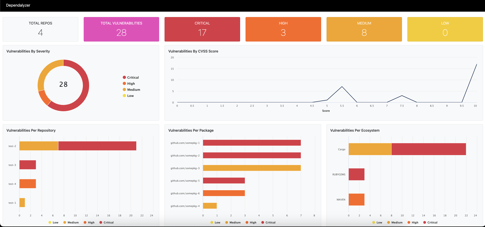

Dependalyzer is an open source project I developed for fun. The project was based on GitHub's Dependabot, which is an automated dependency management tool that helps developers keep their software projects up to date with the latest security patches and software updates. It helps users within their GitHub Enterprise find and fix vulnerabilities in their dependencies. Dependabot alerts can be enabled to notify users about vulnerable dependencies and Dependabot updates to fix the vulnerabilities and keep dependencies up to date. However, as I worked with it, I saw an area where it could improve. One of the biggest challenges with Dependabot is that it didn't provide an aggregate view of all the vulnerable dependencies across all your repositories. Teams would have to manually visit each repository and view the findings one by one. This does not scale effectively, especially in large organizations with numerous repositories. To solve this problem, I created Dependalyzer.
The Importance of Supply Chain Security
Before I talk about the project, let's talk about supply chain security. Supply chain security is paramount in today's software development environment. It ensures the integrity and security of all components that make up your software. This involves understanding the risks associated with each dependency, monitoring for known vulnerabilities, and applying fixes promptly.
Supply chain attacks, where an attacker compromises a trusted component of the software supply chain, have been on the rise. These attacks can lead to significant damage as they can affect multiple products and services that rely on the compromised component. It's therefore crucial to have a robust process to manage dependencies and ensure their security, hence why a lot of these software composition analysis tools are important.
Dependalyzer Overview
Dependalyzer is a tool designed to aggregate and visualize vulnerable dependencies across all of an organization's repositories using GitHub's GraphQL API. It enhances Dependabot's functionality by providing a comprehensive view of vulnerabilities using data visualizations and aiding teams in prioritizing security fixes.
Figure 1: Dashboard
How Security And Engineering Teams Can Benefit
Aggregate View of Vulnerable Dependencies
One of the main challenges with managing dependencies is the lack of an aggregate view of vulnerabilities across all repositories. Dependalyzer addresses this issue by providing a holistic view of all dependencies and their associated vulnerabilities. This saves time and effort for security teams, as they no longer need to manually visit each repository and view the findings individually. By having a centralized view, teams can prioritize and address vulnerabilities more efficiently.
Enhanced Supply Chain Security
Supply chain security is crucial in today's software development landscape. Dependalyzer helps enhance supply chain security by enabling teams to monitor and assess the risks associated with each dependency. It leverages data visualizations to represent the state of dependencies across an organization's repositories, making it easier to identify potential vulnerabilities and take proactive measures to mitigate them. By having a robust process to manage dependencies and ensure their security, teams can reduce the risk of supply chain attacks.
Improved Scalability for Large Organizations
Dependabot, while a valuable tool, may not scale effectively for large organizations with numerous repositories. Manual assessment of vulnerabilities in each repository becomes time-consuming and inefficient. Dependalyzer solves this problem by providing a scalable solution that works seamlessly across the entire organization. It leverages GitHub's GraphQL API to aggregate all Dependabot findings, allowing security and engineering teams to assess vulnerabilities in a centralized manner, regardless of the size of the organization.
Customizable
Dependalyzer is an open source project, which means security and engineering teams can customize and adapt it to fit their specific requirements. Being built using Go, JavaScript, and HTML, it provides flexibility for customization and integration with existing security and engineering workflows. Teams can extend its functionalities, integrate it with other security tools, or contribute to its development, making it a valuable addition to their software supply chain security arsenal.
Conclusion
Dependalyzer offers security and engineering teams an effective solution to understand their software supply chain and manage dependencies more efficiently. It provides an aggregate view of vulnerabilities, enhances supply chain security, scales effectively for large organizations, and offers customization options, ultimately helping teams ensure the integrity and security of their software components.